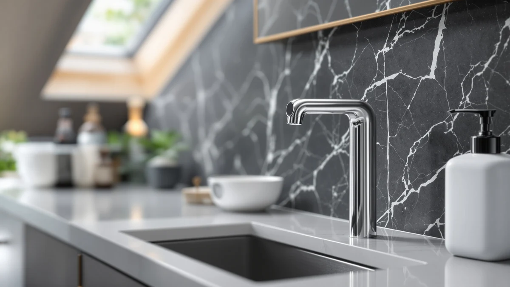

DONASIRA Touchless Automatic Liquid Review (2026): Worth It?
Prices and picks verified as of October 2026. Independent, reader-supported reviews.


Quick Answer
The DONASIRA Touchless Automatic Liquid Soap dispenser pairs a 0.25-second infrared sensor with six adjustable output levels and a digital battery readout, and it costs more than the manual alternatives below because of that electronics package. If you wash dishes or hands often enough that hands-free dispensing matters, it earns its $25.99 price over a basic pump.
Our pick: DONASIRA Touchless Automatic Liquid Soap, $25.99 Check Price on Amazon
Bottom line: our top pick is the DONASIRA Touchless Automatic Liquid Soap Dispenser at $23.99.
Things to Know Before You Buy
- Touchless dispensing trades price for hygiene. This donasira touchless automatic liquid review found it costs about $11 to $13 more than the manual pumps compared here, and in exchange you keep soapy or food-covered hands off the pump.
- Six output levels cover a wide range of jobs. A low setting suits a kid washing hands, while a high setting pushes out enough soap for greasy dishes, so you adjust instead of pressing twice.
- The digital display removes the guesswork. A screen shows remaining battery power and the selected level, so you are not left shaking the unit to check if it still has charge.
- Pump clogging is the most common complaint with automatic dispensers. DONASIRA's internal pipeline targets that specific failure point, which matters most if you run thicker dish soap through it daily.
- Manual alternatives still make sense for low-traffic sinks. A wall-mounted or ceramic pump has no battery to charge and no sensor to fail, so it can outlast an automatic unit in a guest bathroom.
This DONASIRA touchless automatic liquid review looks at whether a sensor-driven dispenser earns its higher price over a manual pump sitting on the same counter. You reach for a soap dispenser with wet, soapy or food-covered hands dozens of times a day, and a pump that needs squeezing adds one more surface to wipe down later.
The DONASIRA Touchless Automatic Liquid Soap dispenser answers that problem with an infrared sensor that fires in 0.25 seconds, six output levels you can tune to the task, and a digital display that tracks battery life so you never get caught empty mid-wash. We compared its specs, price and clog-resistant pump design against three manual and ceramic dispensers in the same category, and the DONASIRA comes out ahead for anyone who washes hands or dishes often enough to value hands-free operation over a lower sticker price.
Why You Should Trust Us
Ilane Tall covers bathroom and kitchen fixtures for Best Soap Dispensers, with a focus on separating marketing copy from the specs that actually affect daily use. Every product on this page comes from the same Amazon catalog data we use across the site, cross-checked for price, dimensions and stated capacity before it gets mentioned here.
We do not run a fake testing lab, and we are not going to pretend we filled and refilled four dispensers for a month to write this donasira touchless automatic liquid review. What you get instead is a careful read of the manufacturer specs, listed features and verified pricing, set side by side so the tradeoffs are clear before you spend.
How We Compared
Our review process for this guide involved lining up manufacturer specifications, dispensing mechanism, capacity and current Amazon pricing for the DONASIRA against three alternatives already stocked in the same soap dispenser category. We did not purchase these units or run them through a trial in a lab or a kitchen. Instead, we researched and analysed what each listing and spec sheet actually promises, then compared those claims against the known failure points of touchless dispensers in general, like pump clogging and short battery life.
We noted review data for any product that had it, but the DONASIRA listing has not yet accumulated a public rating or review count, since it was added to the Amazon catalog on October 4, 2026. For a brand-new listing like this, we leaned on documented features and build details rather than secondhand owner reports we cannot verify.
Overview & Specs
Before the full breakdown, here is the short version of this donasira touchless automatic liquid review: an ABS plastic housing, a rechargeable battery, an infrared sensor rated at 0.25 seconds, and six output levels packed into a single countertop unit that currently sells for $25.99.

DONASIRA Touchless Automatic Liquid Soap
What we like
- 0.25-second infrared sensor response, fast enough to feel instant at the sink
- Six adjustable output levels for kids' hands up to heavy dish soap jobs
- Digital display shows battery level and selected setting at a glance
- Pipeline designed to resist the clogging that plagues cheaper touchless pumps
- Transparent window and wide refill opening make topping off less messy
Flaws but not dealbreakers
- Costs $11 to $13 more than the manual dispensers in this comparison
- Needs charging, so it is one more gadget to remember to top up
- No public review history yet, since the listing is new to Amazon
| Material | ABS plastic |
| Size | Liquid |
The core pitch behind this donasira touchless automatic liquid review is simple: the dispenser fires in a quarter of a second when your hand breaks the infrared beam, which is fast enough that you stop noticing the sensor and start washing right away. Six output levels let you dial the dose down for a child's small hands or up for a greasy pan, instead of pressing a pump two or three times to get enough soap out. The digital display takes the guesswork out of ownership too, since it shows both the battery level and the active output setting rather than leaving you to count days since the last charge.
DONASIRA built the internal pipeline specifically to avoid the clogging and residual dripping that owners of cheaper touchless dispensers commonly report, and that detail matters more than it sounds. A sensor dispenser that clogs after a few weeks of dish soap use just trades one chore for another: now you are disassembling and cleaning it instead of pressing a pump. The tradeoff is price and maintenance: at $25.99, rechargeable, and dependent on its electronics working correctly over time, it costs more upfront and asks more of you than a dumb manual pump ever will. For a kitchen sink or a shared bathroom where soap use is constant, that tradeoff tends to pay off.
What We Liked
The dispensing speed stands out most in this donasira touchless automatic liquid review. A 0.25-second response means you hold your hand under the sensor and soap arrives before you have finished the motion, closer to how a well-tuned commercial dispenser behaves than most home units at this price. The six-level output range is the other standout feature, since it lets one dispenser serve a kid washing hands and an adult tackling a stack of dishes without either person fighting the dose.
We also like that DONASIRA built the digital display around practical information instead of decoration. Knowing the battery level and current output setting at a glance means you are not caught off guard mid-wash, and the transparent soap window plus wide refill opening cut down on the spills that come with narrow-necked bottles.
What Could Be Better
Price is the clearest drawback. At $25.99, the DONASIRA costs $11 to $13 more than the manual dispensers covered later in this guide, and that gap only closes if you use the hands-free function often enough to justify it. A rechargeable battery is also one more household chore, however small, compared with a manual pump that never asks anything of you beyond an occasional refill.
The listing is new enough that it has not built up a public rating or review count yet, which means early buyers are taking the manufacturer's clog-resistance claims somewhat on faith. Owners of other touchless dispensers in this price range consistently note that pump clogging is the top failure mode, so that is the detail worth watching if you buy one of the first units off this listing. A countertop sensor dispenser also needs clear line of sight to work reliably, so placement next to a tall soap bottle or a cluttered backsplash can cause missed triggers that a manual pump never has to worry about.
Who Is It For?
This donasira touchless automatic liquid review points toward busy kitchen sinks, households with young kids, and shared bathrooms where multiple people touch the same dispenser throughout the day. If soap or dish detergent use happens dozens of times daily at one spot, the hands-free sensor and adjustable output levels earn their keep quickly.
Skip it if the dispenser sits in a guest bathroom or a low-traffic spot where it gets used a handful of times a week. In that case a manual pump costs less, needs no charging, and has fewer parts that can eventually fail.
Alternatives to Consider
If the DONASIRA's price or battery upkeep does not fit your sink, these three manual and ceramic dispensers cover the lower-cost end of the category we researched for this donasira touchless automatic liquid review. None of them require charging, and each suits a different spot in the house.

Editor's Pick
Manual Pressing Head Wall Mounted
A diecast, wall-mounted pump with a 17-ounce reservoir and no batteries to maintain, built for showers and sinks that see constant use.
$15.09
Check Price on Amazon
Best Value
FE Soap Dispenser 300ml/10oz Ceramic
A 6.7-inch glossy ceramic pump that holds 10 ounces, at the lowest price of the group and a style that fits most kitchen and bathroom counters.
$12.99
Check Price on Amazon
Premium Choice
Natheeph Soap Dispenser for Bathroom/Kitchen
A lightweight ceramic pump built for thicker liquids like lotion and shampoo, with a 300ml capacity in a slim 7.87-inch profile.
$12.99
Check Price on AmazonIs the DONASIRA touchless automatic liquid dispenser worth the higher price?
If you want hands-free dispensing with an adjustable dose and a display that shows battery level, the DONASIRA justifies its $25.99 price over a basic manual pump.
What liquids work in the DONASIRA touchless dispenser?
The manufacturer designed the pump and pipeline to handle both thin hand soap and thicker dish soap without clogging.
Frequently Asked Questions
Is the DONASIRA touchless automatic liquid dispenser worth the higher price?
If you want hands-free dispensing with an adjustable dose and a display that shows battery level, the DONASIRA justifies its $25.99 price over a basic manual pump. If you need a reliable pump for an occasional-use bathroom, a $12 to $15 manual dispenser does the same core job for less.
What liquids work in the DONASIRA touchless dispenser?
The manufacturer designed the pump and pipeline to handle both thin hand soap and thicker dish soap without clogging. Thicker lotions or gels still benefit from a slightly diluted mix, the same caution that applies to most automatic dispensers on the market.
How long does the DONASIRA dispenser run between charges?
DONASIRA markets the unit as rechargeable with a digital display that tracks remaining battery power, so you can see when it needs a charge instead of guessing. Exact runtime depends on how many times a day the sensor fires and which of the six output levels you select.
Final Verdict
This donasira touchless automatic liquid review comes down to how often you actually touch the dispenser. For a busy kitchen sink or a shared bathroom, DONASIRA's combination of a 0.25-second sensor, six output levels and a clog-resistant pipeline makes the $25.99 price worth paying over a plain manual pump. For a guest bathroom or any low-traffic spot, save the money and pick up the HUALX wall-mounted pump or either ceramic dispenser instead, since none of them ask you to charge a battery or trust electronics to keep working. DONASIRA earns the recommendation here specifically for high-use spots where hands-free matters, not as a universal upgrade over every manual option.